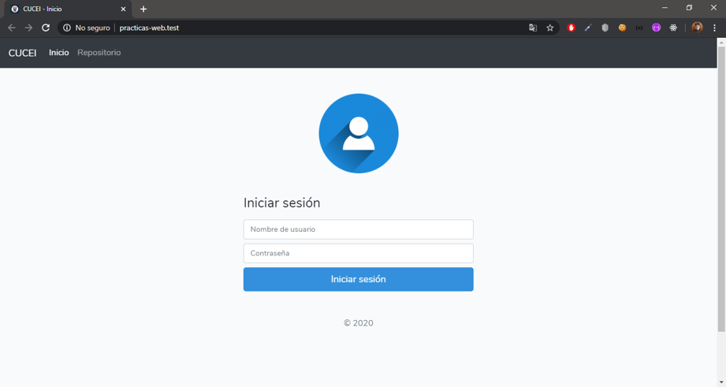

Ruby on Rails
Instalación de Ruby on Rails en Windows
Vamos a instalar nuestro entorno de trabajo, para eso vamos al sitio oficial RailsInstaller, el cual nos ofrece un entorno de trabajo con una gran variedad de herramientas para iniciar a trabajar.
Ya que descargamos y seguimos los típicos pasos de instalación, como cualquier otro programa de Windows, abrimos nuestra terminal y verificamos las versiones de nuestras gemas con el siguiente comando:
gem --version
Las gemas son prácticamente librerías, para complementar nuestro desarrollo de aplicaciones web.
Vamos a completar la instalación para la descarga y actualización de gemas con el siguiente comando:
gem install bundle
Para crear un proyecto nuevo de Ruby on Rails es con el siguiente comando:
rails new nombre_de_aplicación
Nos posicionamos en el directorio de nuestro proyecto, y ejecutamos este comando para actualizar o agregar gemas en el proyecto:
bundle install
Para correr el servidor local.
rails s
Ahora tendremos instalado Ruby on Rails en nuestra computadora y lista para trabajar.
Instalación de Ruby on Rails en Linux
Abrimos nuestra terminal, primero vamos a instalar RVM con el siguiente comando:
sudo apt-get install curl
Ahora utilizamos "curl" para actualizar la versión más reciente de RVM:
curl -sSL https://rvm.io/mpapis.asc | sudo gpg2 --import -
curl -sSL https://get.rvm.io | sudo bash -s stable
Vamos a crear un entorno virtual de trabajo:
source /etc/profile.d/rvm.sh
Instalamos las dependencias de ruby:
rvm requirements
Instalamos las gemas necesarias para empezar a trabajar con Rails.
gem install rails
Y listo ya tenemos instalado Ruby on Rails.
Programa en Ruby on Rails
Login en Ruby on Rails.

Profile en Ruby on Rails.